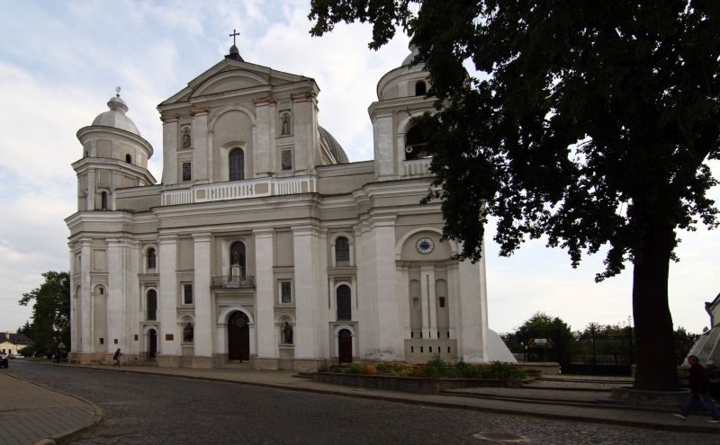

Аптека-музей – одноповерховий будинок з двоповерховими підвалами та циліндричними склепіннями.
Костел Петра і Павла і розташований поруч колегіум колись належали ордену єзуїтів.

Її збудували в 1906 році, і від дня відкриття вона була головним на Волині храмом німецьких колоністів.
Тут ви можете побачити старовинні друкарські верстати, один з них має дуже поважний вік – виготовили його аж у 15 столітті.
Це місце, яке обов'язково відвідує кожен турист, приїхавши до Луцька.


Старе місто - Аптека-музей, Будинок скульптора Голованя Лютеранська кірха, Покровська церква, Собор Петра та Павла Луцький зоопарк Обід в Луцьку Луцький замок Любарта
Луцьк – це фантастичне місто, в якому хочеться побувати і безмежно хочеться повернутися знову. Тут тісно переплелись минуле і сучасне, тут ще чути відголоски лицарських турнірів, тут співають повстанських пісень, тут місцевих жителів називають лучанами, тут колись ходила вулицями Леся Українка, тут лунає хороша музика, тут народжуються герої, тут смачна кухня і спокійний темп життя. Луцьк – це місце, де вже починається Європа. Так що – WELCOME! Пропонуємо дізнатися цікаві і неймовірні факти про чудове місто Луцьк!